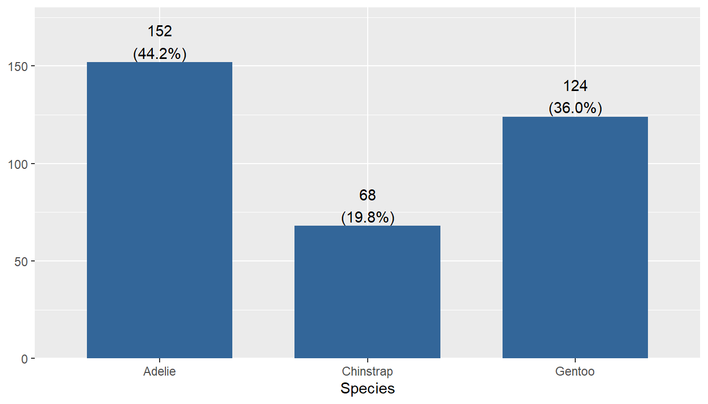
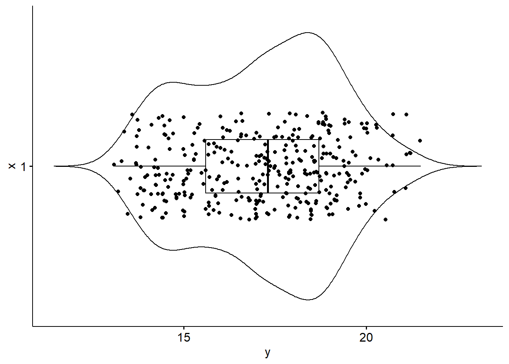

Describing distributions of data
Visualizing your data is the first line of defense against bad data
Learning Path
Where we’ve been
Importing & starting to wrangle our data
Where we’re at
Ready to visualize and learn characteristics of our data.
Objectives
- Create appropriate summary statistics and visualizations for different types of data.
Learning Materials
Slides (Will open in full screen. Right click to open in a new tab)
📚 Reading
- PMA6 Ch 4
- ASCN Ch 2.3
📝 Collaborative notes
- NA
Assignments
Notes
❗ New. I’m not too happy with the slide format, so i’m testing out a ‘single page’ format (which is what I historically have done anyhow)
Motivation
Visualizing your data is hands down the most important thing you can learn to do.
- Screen for data entry errors
- Out of range variables
- Mistakes in coding
- Violation of model assumptions
Level of care depends on the audience
There are three main audiences in mind when creating data visualizations:
- For your eyes only (FYEO). These are quick and dirty plots, without annotation. Meant to be looked at once or twice.
- You’ll create a TON of these. Don’t spend a ton of time on them.
- To share with others internally. These mostly need to stand on their own. Axes labels, titles, colors as needed, possibly captions.
- You’ll create a lot of these, and you’ll get better with practice at adding necessary annotation without a lot of time
- Professional - Contains all bells and whistles needed to make it publication quality.
- You’ll create very few of these, but they demand a lot of time, detail and thought.
Graphing with intent
Along with having the audience in mind, it is important to give thought to the purpose of the chart.
The effectiveness of any visualization can be measured according to how well it fulfills the tasks it was designed for. (A. Cairo, 2018).
Choosing Appropriate Visualization
75% of your choice is determined by the data type
Meet the Palmer Penguins

library(palmerpenguins) # for access to the penguin data
library(ggplot2) # part of the tidyverse, but I'm being explicit here
library(sjPlot) # alternative plotting package. GREAT for barcharts
pen <- penguins # create a copy with a shorter name b/c I'm lazySingle Categorical Variable
Frequencies (N)
table(pen$species)
Adelie Chinstrap Gentoo
152 68 124 Percents (%)
table(pen$species) |> proportions() |> round(digits=2)
Adelie Chinstrap Gentoo
0.44 0.20 0.36 Penguin species Adelie make up 44% of the sample (n=152)
sjPlot::plot_frq(pen$species) + xlab("Species")
Meet the base “pipe” |>
This functions sufficiently the same as %>% but doesn’t require the magrittr package (part of the tidyverse). You are welcome to use either.
Single Numeric Variable

summary(pen$bill_depth_mm) Min. 1st Qu. Median Mean 3rd Qu. Max. NA's
13.10 15.60 17.30 17.15 18.70 21.50 2 sd(pen$bill_depth_mm, na.rm=TRUE)[1] 1.974793
The average bill depth is 17.15mm, with a standard deviation of 1.9mm.
summary(pen$bill_depth_mm) Min. 1st Qu. Median Mean 3rd Qu. Max. NA's
13.10 15.60 17.30 17.15 18.70 21.50 2 IQR(pen$bill_depth_mm, na.rm=TRUE)[1] 3.1
Bill depth ranges from 13.1 to 21.5mm, and has an IQR of 3.1mm.
ggpubr::gghistogram(pen$bill_depth_mm, add_density = TRUE)
ggpubr::ggviolin(pen$bill_depth_mm, add = c("jitter", "boxplot")) + coord_flip()
The distribution of bill depth appears to be bimodal with peaks around 15 and 18mm.
How to create graphs
- Similar to the data management section, after identifying what you want to do, you go look up how to do that thing.
- Don’t expect to remember the exact code yet, just know where to look up an example and copy from there (all the ref’s below)
- copy/paste/pray
- Keep graphs simple until you get more comfortable.
References
- PMA6 Chapter 4 for appropriate plot choices
- Applied Stats course Notes Chapter 2.3 for examples and code
- HackMD Notes for Code specific notes
- R specific help on the Math 130 class page
sjPlotvignette: https://strengejacke.github.io/sjPlot/index.htmlggpubrvignette: https://rpkgs.datanovia.com/ggpubr/ggplotvignette: https://ggplot2.tidyverse.org/index.html- R graphics cookbook: https://r-graphics.org/